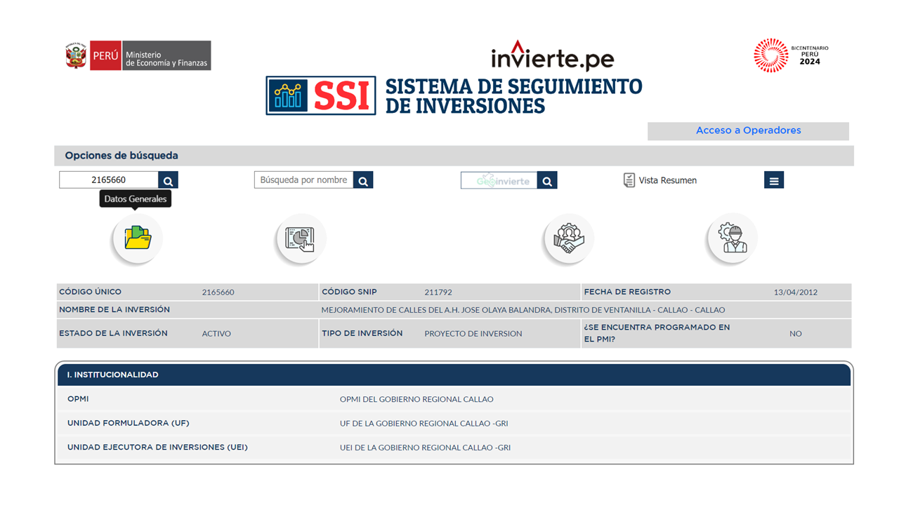
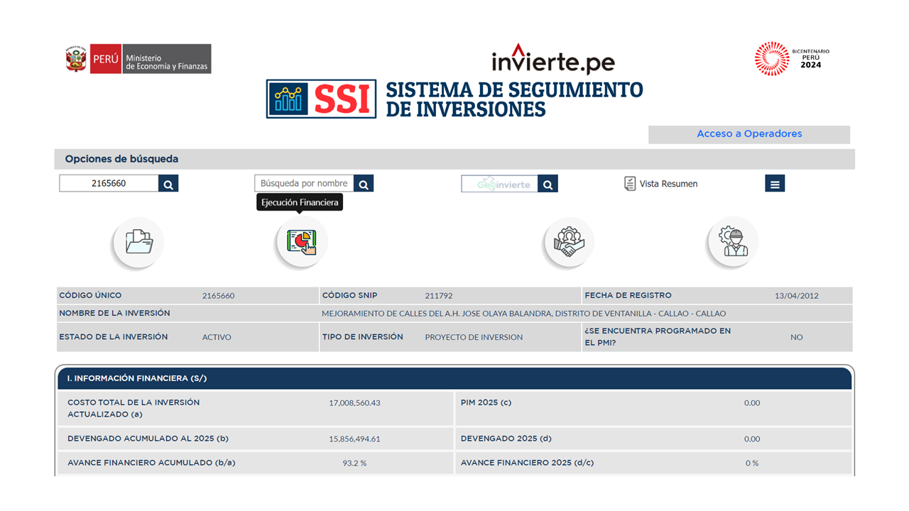
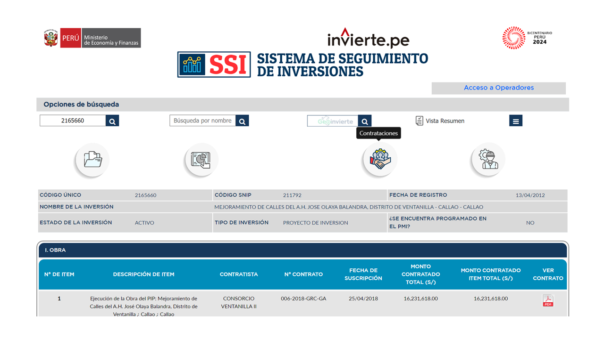
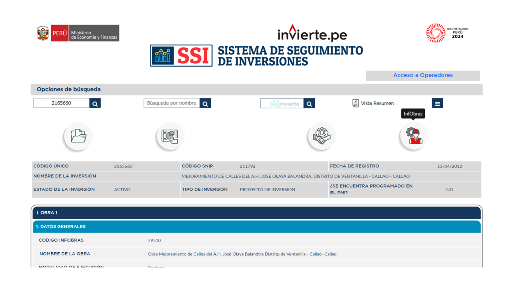

sisedeinversiones package#
Sistema de Seguimiento de Inversiones (SSI)#
Es una herramienta informática de acceso público que permite el seguimiento de las inversiones públicas e integra información de las diferentes fases del ciclo de inversión como Programación Multianual de Inversiones, Formulación y del Estado como Sistema Nacional de Programacion Multianual y Gestión de Evaluación, y Ejecución. Además, está vinculado con varios sistemas informáticos Inversiones – Invierte.pe, SEACE, InfObras y SIAF. 1Extraido de (S/f). Gob.pe. Recuperado el 19 de enero de 2025, de https://www.mef.gob.pe/contenidos/inv_publica/docs/Instructivo_BI/2024/Seguimiento_2_Manual_SSI.pdf.
1. Objetivos del SSI#
N° |
Objetivos |
|---|---|
01 |
Mostrar información sistematizada de las inversiones públicas, para un adecuado seguimiento |
02 |
Optimizar el tiempo de búsqueda a través de los vinculos de acceso con los formatos de las diferentes fases del Ciclo de Inversión |
03 |
Brindar información actualizada de las inversiones con la finalidad de facilitar la elaboración de reportes de seguimiento. |
04 |
Conocer los actores que intervienen en la gestión de la Inversión Pública (UEI, UF y OPMI) |
2. Entorno del SSI#

3. Secciones del SSI#
3.1 Sección: Datos generales#
3.1 Sección: Ejecución financiera#
3.1 Sección: Contrataciones#
3.1 Sección: InfObras#
Paquete SiSedeInversiones#
1. Instalación#
Para usar SiSedeInversiones, primero debes instalarlo usando pip:
(.venv) $ pip install SiSedeInversiones
Subpackages#
- sisedeinversiones.form_eight package
- Package Eight
- Información que se extrae del formulario N°8
- Sección: Datos generales
- Sección: Datos de la fase de Formulación y Evaluación, modificados en la fase de Ejecución
- 1.- Responsabilidad funcional del proyecto de inversión
- 2.- Articulación con el programa Multianual de inversiones (PMI)
- 3.- Institucionalidad
- 4.- Localización geográfica del proyecto de inversión
- Información que se extrae del formulario N°8
- Submodules
- Package Eight
- sisedeinversiones.form_general package